戦士 WAR
あらゆる武器を操る戦闘のプロ。高いHPとSTRで前衛として活躍する。
- なり方
- 最初から
- 武器
- 片手剣・斧・両手剣・棍など何でも
- アビリティ
- 剛力乱撃(Lv1)、挑発(Lv5)、プル(Lv10)、猛り(Lv15)、守りの型(Lv25)、鬨の声(Lv35)…
- 魔法
- なし
グリオンは、剣と魔法の世界で仲間と一緒に魔物を狩り、依頼をこなして強くなるオンラインRPGです。無料で遊べます（Windows 11／10）。町の外の魔物を倒すと経験値と「グリム」（お金）が手に入り、レベルは最大60まで上がります。
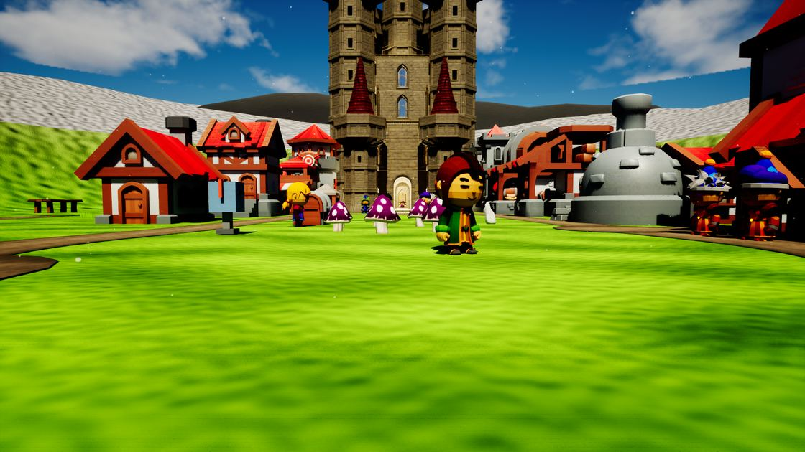
GrimoireOnline_Setup.exe を開いて「次へ」。「WindowsによってPCが保護されました」と出たら「詳細情報」→「実行」を押します（個人で作ったアプリのため出ます）。| 種族 | 特徴 |
|---|---|
| アルデン | 偏りのない万能種族。どのジョブでも扱いやすい。迷ったらこれ |
| セルヴァ | 長身で力と信仰に篤い。腕力と精神に優れるが、知性と素早さは苦手 |
| ミュル | 小柄だが魔力は随一。打たれ弱いが知性が飛び抜けている |
| フェリン | 敏捷な獣人。器用さと素早さに優れ、前衛の手数で戦う |
| グラウド | 巨躯の剛力種族。体力と腕力に優れるが魔法は不得手 |
種族の差は能力値の「味付け」程度です。性格はジョブで決まります。
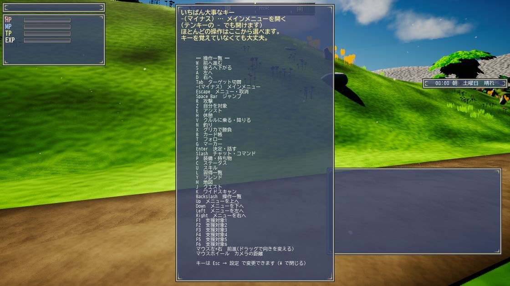
| W A S D | 前後左右に歩く |
|---|---|
| Space | ジャンプ |
| マウス右ボタンを押しながら動かす | 視点を回す |
| マウス左右ボタンを同時押し | 前へ歩く(押したまま動かすと向きが変わる) |
| マウスホイール | カメラの距離 |
| V | クルルに乗る・降りる(クルルの笛が要る) |
| T | 選んだ人に付いて歩く(フォロー) |
| TAB | 近くの魔物・NPC・人を順に選ぶ |
|---|---|
| ENTER | 選んだ相手に「話す」「調べる」／コマンド窓を開く／決定 |
| ESC | 窓を閉じる・取り消し・攻撃をやめる |
| Z | 自分を選ぶ |
| ↑↓←→ | 窓の中で選ぶ |
| F1〜F6 | 回復や強化の相手(パーティの1〜6人目) |
| ENTER →「攻撃」を選ぶ | 敵を選んで ENTER を押すとコマンド窓が開きます。その中の「攻撃」を ↑↓ で選んで ENTER を押すと、離れていても敵のそばまで自動で歩いて行き、着いたら自動で攻撃し続けます(おすすめ。R キーでも攻撃でき、R をもう一度押すと止まる) |
|---|---|
| ENTER →「武技」を選ぶ | 同じコマンド窓の「武技」から武技を使います(TPが100%以上のとき。1 キーでも可) |
| ENTER →「魔法」を選ぶ | 同じコマンド窓の「魔法」から魔法を使います(2 キーでも可) |
| E | 仲間が攻撃している相手を自分も狙う(アシスト。チャットで /assist と打っても同じ) |
| H | 座って休む(HP・MPが回復) |
| G | 選んだ相手にマーカーを付ける |
| −(マイナス) | メインメニュー(全部の機能はここから) |
|---|---|
| P | 装備・持ち物 |
| C | ステータス・称号 |
| U | スキル |
| L | 習得している技の一覧 |
| J | クエスト |
| M | 地図 |
| K | 広域探知(周りの魔物・仲間の一覧)。↑↓で敵を選んで ENTER を押すと、その敵をターゲットして、そばまで自動で歩いて行きます(着いたら ENTER →「攻撃」)。仲間を選ぶと、その場所まで歩きます |
| Y | フレンド |
| B | カード帳(グリカ) |
| X | 選んだ相手にグリカで勝負を挑む |
| N | 釣り(竿と餌を装備して水辺で) |
| \(バックスラッシュ) | 操作一覧 |
| /(スラッシュ) | チャット・コマンド入力 |
|---|---|
| Ctrl+Q | 欠けている絆(仲間)を順に呼び足す |
| Ctrl+Shift+Q | 自動狩り(AIモード)の入切。Lv30から |
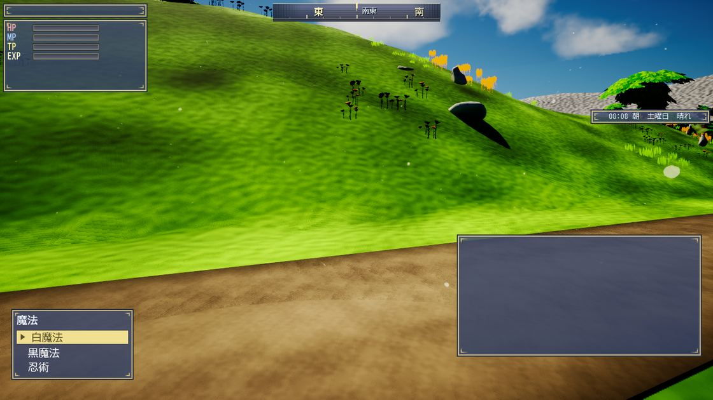
キーの割り当ては ESC→「設定」で自分の好みに変えられます。
NPCに近づいてTABで選びENTER。店は品を選んでENTERで買い、売るときは自分の持ち物の欄へ←→で移ります。頭の上に「！」が出ているNPCは依頼を持っています（「！！」は絆の証、「？」は報告できる／進行中）。
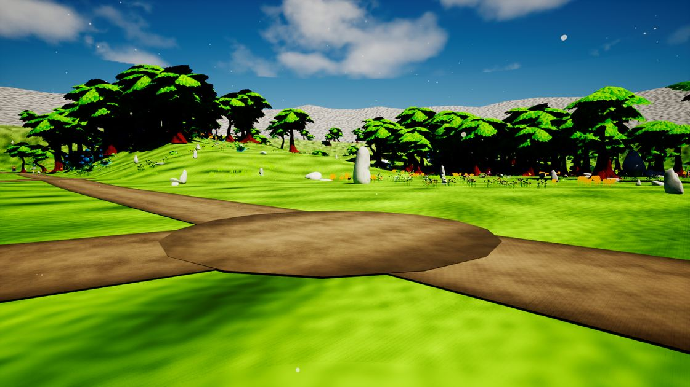
/ah）。「同じレベル〜少し上」の魔物を狩るのがいちばん効率よく、格上（レベルが5以上上）は絆を呼んでも危険です。狩り場を移す目安をまとめました。
| レベル | 狩り場 | 相手にする魔物 | 受ける依頼 | ひとこと |
|---|---|---|---|---|
| Lv1〜5 | ロックヒル北部 | ゴブリン(Lv1)・チキン(Lv1)→コウモリ(Lv2)→スライム(Lv3)→サソリ・カエル(Lv4)→マッシュ(Lv5) | 「ゴブリン退治」「薬包の奪還」「盗賊団への入団試験」「鉱山の通行許可」「古びた地図の調査」 | Lv1〜3は「初心者の加護」で受ける傷が減る(Lv1で−30%)。Lv8までは倒れても経験値が減らない。 |
| Lv5〜10 | 北部の奥・ロックヒル南部・大坑道 | ゴブリンガード(Lv6)・カクタス(Lv7)→南部のスライム・バーブ・トゲスライム(Lv6〜8)・アルマビー(Lv9)。大坑道(Lv5〜9) | 「珍味の食材」「カクタス退治」「ゴブリンの頭目退治」→ギルドの依頼が始まる。Lv10「坑道の主を鎮めよ」「釣り人への道」 | Lv10で絆「白導士セラ」の証(導師エルナ)。指輪・ピアス・ブラス装備が着けられる。 |
| Lv10〜15 | ロックヒル南部・ミストヴェイル密林 | オーク(Lv11)・ワーグ(Lv12)・ゴブリンメイジ(Lv13)／密林のピンクゼリー(Lv10)・サーベルキャット(Lv12)・モンクルース(Lv13) | ギルド「オーク隊の掃討」「ワーグの群れ」「牙猫の狩り場」。Lv12〜16 クルル舎の親方の3つ(クルルに乗れる) | Lv15で絆「戦士リオ」(訓練官ドルグ)。ここから絆と一緒に狩ると楽。 |
| Lv15〜20 | ヴェルダン高原・密林の奥 | ラビット(Lv14)・スクイドル(Lv16)・ハイワール(Lv17)・サーベルキャット(Lv18)・ゴースト(Lv19)・ディノ(Lv20) | Lv18 ポムリーの「炎・土・水の証」→Lv20「ポムリーの試練」でサポートジョブ。Lv17「聖印のかけら」、Lv20「墓守の依頼」 | ぬし退治(ガラ・ヘイLv17、ソルジャークロウラーLv18、プリンセストードLv20、蛇司祭シェザルLv20)は絆を3〜4人呼んで挑む。 |
| Lv20〜30 | ヴェルダン高原の奥・万魔の谷の入口・モルガ胞子林・地下霊廟 | オークスカル(Lv22)・コーカス(Lv22)・イエティ(Lv25)／谷のゴーレリング(Lv21)・コルヴ(Lv24)／胞子林(Lv24〜30)／地下霊廟(Lv24〜36) | ギルド「オークスカルの砦」、Lv22「牙の交易品」、Lv25「女王の宝珠」、Lv28「雪男の毛皮」 | Lv20 絆「黒導士ノア」、Lv25「モンクガイ」。Lv28以降は上級ジョブの依頼が始まる。 |
| Lv30〜40 | 万魔の谷・サルタ塩湖跡 | エイリアン・スカルゴースト(Lv30)・デーモン(Lv32)・ブルーデーモン(Lv35)／塩湖跡の塩殻ガニ(Lv32)〜白骨番兵(Lv38) | Lv30 上級ジョブの依頼5本(ナイト・暗黒騎士・獣使い・忍者・吟遊詩人)。ギルド「万魔の谷のデーモン」 | Lv30で自動狩り(AIモード)が使える。絆はミナ(Lv32)・リラ(Lv35)・リュカ(Lv36)。 |
| Lv40〜50 | エメル海岸・万魔の谷の奥・地底塩窟 | 浜の魔物(Lv40〜50)／谷の奥の戦慄竜(Lv44)・魂喰竜(Lv46)／地底塩窟(Lv40〜52) | Lv41 絆「ナイトアルド」。Lv45 ギルド「竜殺しの証」→Lv46〜50「アダマン」3本 | Lv50で「勇者の資格」(鏡の祠)。王のぬし3体(モルガLv35・サルタLv44・ガルマーレLv52)を討つ。 |
| Lv50〜60 | 鈍色の塩底・ヴェルミア岬・影ロックヒル | 塩底の枯塩の徘徊者(Lv48)〜白晶の巨躯(Lv60)／岬の大蟹(Lv58)〜廃城の黒騎士(Lv70) | ギルド「湖」の依頼4本(Lv54〜60)。Lv58〜60 剣聖の道3本。絆カゲロウ(Lv51)・ルカ(Lv52)・ヴァル(Lv57) | レベルの上限は60。影ロックヒルの11階を降りて【勇者】の称号を目指す。 |
/ai）。依頼はJの窓で確かめられます。「受注中に倒すと『だいじなもの』に入る」型の依頼は、受けてから倒さないと品が落ちません。連続する依頼は前の1つを終えると次が出ます。
| Lv | 依頼 | 受ける相手 | やること | 褒美 |
|---|---|---|---|---|
| Lv1 | ゴブリン退治 ロックヒル北部のゴブリンを16体倒してきておくれ。 | 街の住人 | ゴブリン ×16 | 50グリム、冒険者の指輪 |
| Lv8 | カクタス退治 ミストヴェイル密林のカクタスを16体退治してほしい。針が厄介でな。 | 街の住人 | カクタス ×16 | 80グリム、不動のマント |
| Lv2 | 薬包の奪還 ゴブリンが薬包を盗んでいった。受注中に倒して取り返してくれ（だいじなものに入る）。 | 衛兵 | 品を集めて渡す | 40グリム、韋駄天の靴 |
| Lv3 | 盗賊団への入団試験 腕を見せてもらおう。コウモリを8匹始末してこい。 | 怪しい男 | コウモリ ×8 | 70グリム、盗賊団のドクロ章 |
| Lv4 | 鉱山の通行許可 スライムが坑道を塞いでてな。6匹退治してくれれば通行証を出そう。 | 鉱夫 | スライム ×6 | 65グリム、鉱山の通行証 |
| Lv10 | 坑道の主を鎮めよ 坑道の奥に主が居着いてしまった。あれを鎮めんと、掘るに掘れん。 | 鉱夫 | 大坑道の主ドルガン ×1 | 110グリム |
| Lv5 | 古びた地図の調査 サソリを6匹退治してくれたら、この古びた地図を譲ろう。 | 旅の商人 | サソリ ×6 | 60グリム、古びた地図 |
| Lv6 | 珍味の食材 料理に使うサソリの尾が欲しい。受注中にサソリを倒すとだいじなものに入る。 | 料理人 | 品を集めて渡す | 35グリム、詠唱のサークレット |
| Lv15 | ラビット狩り ヴェルダン高原のラビットを20匹狩ってきておくれ。 | 猟師 | ラビット ×20 | 100グリム、勇者の剣 |
| Lv11 | 密書を届けよ 情報屋が密書を持っている。受け取って私（町長）に届けてくれ。 | 町長 | 品を集めて渡す | 90グリム、賢者のピアス |
| Lv17 | 聖印のかけらを探せ ゴブリンガードが聖印のかけらを持っているはずだ。受注中に奴を倒して取り戻してくれ。 | 神官 | 品を集めて渡す | 120グリム、戦人の腕輪 |
| Lv25 | 女王の宝珠を求めて 街はずれの古い宝箱に女王の宝珠が眠っているという。受注中に宝箱を開けて持ってきてくれ。 | 学者 | 品を集めて渡す | 140グリム、盗賊の短剣 |
| Lv10 | 釣り人への道 釣りは いいぞう。竿と餌を装備して、水辺で釣りキー(N)か /fish だ。魚を20匹釣ってきたら、わしの匠の竿を譲ってやろう。 | 釣り師ヴェッド | 魚を20匹釣る | 60グリム、匠の釣り竿 |
| Lv | 依頼 | 受ける相手 | やること | 褒美 |
|---|---|---|---|---|
| Lv9 | ゴブリンの頭目退治 厄介なゴブリンガードを10体討伐してくれ。 | ギルド受付 | ゴブリンガード ×10 | 70グリム、守りの兜 |
| Lv11 | オーク隊の掃討 ロックヒル南部でオークが徒党を組んでいる。12体ほど散らしてきてほしい。 | ギルド受付 | オーク ×12 | 75グリム |
| Lv12 | ワーグの群れ 街道にワーグが出た。10頭ほど間引いてくれ。旅人が通れん。 | ギルド受付 | ワーグ ×10 | 85グリム |
| Lv13 | 牙猫の狩り場 ミストヴェイル密林のサーベルキャットを10頭。狩り場を取り戻したい。 | ギルド受付 | サーベルキャット ×10 | 95グリム |
| Lv18 | ナーガの祈祷を断て ナーガの司祭がミストヴェイル密林で怪しい祈祷を続けている。6体を鎮めてきてくれ。 | ギルド受付 | ナーガの司祭 ×6 | 130グリム |
| Lv23 | オークスカルの砦 ヴェルダン高原の砦にオークスカルが居座った。8体、砦から追い出してくれ。 | ギルド受付 | オークスカル ×8 | 190グリム |
| Lv33 | 万魔の谷のデーモン 万魔の谷にデーモンが湧いている。5体。……無理はするな、と言っても行くのだろう? | ギルド受付 | デーモン ×5 | 320グリム |
| Lv45 | 竜殺しの証 ギルド最後の依頼だ。ドラゴンロードを討て。生きて戻れば、君の名は記録に残る。 | ギルド受付 | ドラゴンロード ×1 | 900グリム、アダマンソード |
| Lv46 | 炉に灯を その剣を打った鉱がまだ要る。万魔の谷の奥にいる戦慄竜の腹にアダマン鉱が眠っている。持って帰れるか。 | ギルド受付 | 品を集めて渡す | 1200グリム、アダマンガントレ |
| Lv48 | 拳に鋼を 万魔の谷の奥の魂喰竜を3頭。鋼は打つほど締まる。お前も同じだ。 | ギルド受付 | 魂喰竜 ×3 | 1500グリム、アダマンクロー |
| Lv50 | 不退の脚 最後だ。竜王の鱗を一枚剥いでこい。あれを踏み固めた脚甲は、生涯退かずに済む。 | ギルド受付 | 品を集めて渡す | 2000グリム、アダマングリーブ |
| Lv54 | 湖底の影を祓え 鈍色の塩底の奥に、形を持たぬ影が湧いている。5つ祓ってくれ。あそこは灯りが効かん。 | ギルド受付 | 湖底の影 ×5 | 2400グリム、静寂の環 |
| Lv57 | 黒騎士の残骸 鈍色の塩底をさまよう黒騎士がいる。兜の欠片を一つ持ち帰ってくれ。名も知れぬ古い兵だ。 | ギルド受付 | 品を集めて渡す | 2800グリム、鎮魂の耳環 |
| Lv59 | 白晶を砕く 湖の一番深い所で、塩の巨躯が育ちきっている。3体砕け。育つ前でないと手が付けられん。 | ギルド受付 | 白晶の巨躯 ×3 | 3400グリム、白晶の指輪 |
| Lv60 | 湖底王ネルガル 乾いた湖の底に、王を名乗る者が座っている。ネルガル。……生きて戻れとは言わん、が、戻ってこい。 | ギルド受付 | 湖底王ネルガル ×1 | 6000グリム、湖底王の首飾り |
| Lv | 依頼 | 受ける相手 | やること | 褒美 |
|---|---|---|---|---|
| Lv18 | 炎の証 まずはロックヒル南部のガラ・ヘイを倒し、『炎の証』を持ち帰るポム！ 強敵だから油断しないポム！ | ポムリー | 品を集めて渡す | 180グリム |
| Lv18 | 土の証 次はソルジャークロウラーを倒し、『土の証』を持ち帰るポム！ 固い殻に負けないポム！ | ポムリー | 品を集めて渡す | 220グリム |
| Lv18 | 水の証 最後の証はプリンセストードが持つ『水の証』ポム！ 跳ね回る強敵を仕留めてくるポム！ | ポムリー | 品を集めて渡す | 300グリム |
| Lv20 | ポムリーの試練 三つの証だけでは終わりじゃないポム！ 蛇司祭シェザルと呼ばれるナーガの司祭を倒し、本当の力を示すポム！ | ポムリー | 蛇司祭シェザル ×1 | 500グリム、サポートジョブ(ポムリーに話す) |
| Lv | 依頼 | 受ける相手 | やること | 褒美 |
|---|---|---|---|---|
| Lv12 | クルルの好物 クルルと仲良くなりたいなら、まず腹を満たしてやることだ。香草を3束、摘んできな。 | クルル舎の親方 | 品を集めて渡す | 90グリム |
| Lv14 | 野生のクルル 野生のクルルは、ワーグの臭いをひどく嫌う。南の野で7頭追い払い、道を静かにしてきな。 | クルル舎の親方 | ワーグ ×7 | 130グリム |
| Lv16 | クルル乗りの証 仕上げだ。南の野を縄張りにするアルパキングを退けてこい。あいつの前で怯まなければ、クルルも背を預ける。 | クルル舎の親方 | アルパキング ×1 | 210グリム、クルルの笛、クルルの笛(騎乗できる) |
| Lv | 依頼 | 受ける相手 | やること | 褒美 |
|---|---|---|---|---|
| Lv13 | オークの脅威 ロックヒル南部にオークの一団が居座っている。8体討ち払ってくれ。 | 傭兵団長 | オーク ×8 | 90グリム、チェーンメイル |
| Lv30 | 影を追う者 影を名乗りたきゃ、空の影から逃げるな。コルヴを14体叩き落としてこい！ | 傭兵団長 | コルヴ ×14 | 550グリム |
| Lv38 | 悪夢竜の逆鱗 悪夢竜ヴァルガナの懐へ潜り、逆鱗を奪ってこい。生きて戻れたら影の技を認めてやる！ | 傭兵団長 | 品を集めて渡す | 900グリム、上級ジョブ「忍者」 |
| Lv20 | 墓守の依頼 ヴェルダン高原に亡霊がさまよっている。6体を鎮めてやってくれ。 | 墓守 | ゴースト ×6 | 110グリム、浄魔の指輪 |
| Lv30 | 骸の行進 墓の底で骨どもが歩いている……スカルゴーストを14体、もう一度眠らせておくれ。 | 墓守 | スカルゴースト ×14 | 500グリム |
| Lv34 | 奈落王の黒角 奈落王グァルドスの黒角を折ってきな……闇を恐れる者には、決してできない。 | 墓守 | 品を集めて渡す | 700グリム、上級ジョブ「暗黒騎士」 |
| Lv28 | 雪男の毛皮 ヴェルダン高原の奥に住むイエティの毛皮が欲しい。受注中に倒して剥いできてくれ（だいじなものに入る）。 | 毛皮商 | 品を集めて渡す | 140グリム、グレートソード |
| Lv30 | 群れを退ける ワーグが16頭も群れて、獣道を荒らしてる。追っ払って、森に息をつかせてやってくれ。 | 毛皮商 | ワーグ ×16 | 480グリム |
| Lv33 | 森王の胞子 森の主を名乗るキノコ王がいる。森王の胞子を分けてもらってこい。手荒でも仕方ないさ。 | 毛皮商 | 品を集めて渡す | 680グリム、上級ジョブ「獣使い」 |
| Lv22 | 牙の交易品 ミストヴェイル密林のサーベルキャットの牙は良い細工物になる。受注中に倒して取ってきてくれ（だいじなものに入る）。 | 牙細工師 | 品を集めて渡す | 100グリム、猟兵のマント |
| Lv30 | 森の音 歌は耳から入る。万魔の谷のエイリアンを12体しずめ、その鳴き声を覚えてこい。 | 牙細工師 | エイリアン ×12 | 450グリム |
| Lv34 | 竜の鳴き骨 竜の喉には鳴き骨がある。ヴェルダン高原のドラゴンから持ち帰れ。それが最初の楽器になる。 | 牙細工師 | 品を集めて渡す | 700グリム、木の竪琴、上級ジョブ「吟遊詩人」 |
| Lv30 | 誉れの砦 誉れを望むなら、まず砦のオークスカルを14体討て。言葉ではなく剣で示せ。 | 領主(城) | オークスカル ×14 | 450グリム |
| Lv32 | 聖騎士の紋章 竜を退け、聖騎士の紋章を持ち帰れ。それを成せば、ナイトの名を許す。 | 領主(城) | 品を集めて渡す | 650グリム、上級ジョブ「ナイト」 |
| Lv | 依頼 | 受ける相手 | やること | 褒美 |
|---|---|---|---|---|
| Lv10 | 絆の証・癒 ロックヒル南部のアルマビーを8匹しずめてください。癒やし手には、倒すべき時と手を差し伸べる時を見分ける心が要ります。 | 導師エルナ | アルマビー ×8 | 120グリム |
| Lv15 | 絆の証・剣 ヴェルダン高原のスクイドルを8体退けてこい。誰かを守る戦士には、敵の動きを読む目が要る。戻ったらリオへ証を渡そう。 | 訓練官ドルグ | スクイドル ×8 | 160グリム |
| Lv20 | 絆の証・炎 ヴェルダン高原のディノを8体しずめてください。炎を恐れず、状況を見て術を選ぶ心を示すのです。 | 導師エルナ | ディノ ×8 | 180グリム |
| Lv25 | 絆の証・拳 ヴェルダン高原のイエティを8体倒してこい。大きな相手にも退かぬ拳を見せてもらおう。 | 訓練官ドルグ | イエティ ×8 | 280グリム |
| Lv32 | 絆の証・影 モルガ胞子林の胞子眼を8体仕留めてこい。見られる前に死角へ入る勘を試す。 | 訓練官ドルグ | 胞子眼 ×8 | 420グリム |
| Lv35 | 絆の証・理 万魔の谷のブルーデーモンを8体退けてください。攻めと支えを選ぶ理を示すのです。 | 導師エルナ | ブルーデーモン ×8 | 720グリム |
| Lv36 | 絆の証・音 万魔の谷のスカルゴーストを14体しずめてこい。骨の歌を聞き届けられる耳を見せろ。 | 導師エルナ | スカルゴースト ×14 | 950グリム |
| Lv41 | 絆の証・盾 サルタ塩湖跡の塩晶ゴーレムを8体砕いてこい。重い一撃を正面から受ける覚悟を見せろ。 | 訓練官ドルグ | 塩晶ゴーレム ×8 | 1050グリム |
| Lv51 | 絆の証・霞 エメル海岸のゴーレリングを8体倒してこい。霞のように攻撃を受け流す腕を見せろ。 | 訓練官ドルグ | ゴーレリング ×8 | 1350グリム |
| Lv52 | 絆の証・牙 鈍色の塩底の塩喰らいの蜥蜴を8体鎮めてこい。獣の気配と力を読めるか試す。 | 訓練官ドルグ | 塩喰らいの蜥蜴 ×8 | 3000グリム |
| Lv57 | 絆の証・闇 鈍色の塩底の鹹湖の黒騎士を8体倒してこい。命を削る闇に呑まれぬ意志を示せ。 | 訓練官ドルグ | 鹹湖の黒騎士 ×8 | 4200グリム |
| Lv | 依頼 | 受ける相手 | やること | 褒美 |
|---|---|---|---|---|
| Lv1 | 村の塩焼き指南 まずは火の扱いを見せてもらおう。塩焼きの魚を2皿作って持っておいで。 | 村の料理人(ヴェイル村) | 品を集めて渡す | 80グリム、香草 |
| Lv2 | 香草蒸しの頃合い 調理16まで腕が上がったら、ニジマスの香草蒸しを1皿仕上げておいで。 | 村の料理人(ヴェイル村) | 品を集めて渡す | 180グリム、霜降り材 |
| Lv3 | 霜香る燻製 調理32の火加減で、霜降り燻製を1皿作って持っておいで。 | 村の料理人(ヴェイル村) | 品を集めて渡す | 360グリム、竜血樹の芯 |
| Lv4 | 淵の王を煮込む 調理56に届いた腕で、淵の王の姿煮を1皿仕上げておいで。鍋から目を離すんじゃないよ。 | 村の料理人(ヴェイル村) | 品を集めて渡す | 900グリム、星屑草 |
| Lv1 | 薬草を煎じる手 錬金の初歩だ。ポーションを3本作って持ってきておくれ。 | 村の素材屋(ヴェイル村) | 品を集めて渡す | 70グリム、香草 |
| Lv2 | 魔力を澄ませる 錬金12まで磨いたら、マナポーションを2本調合して持ってきておくれ。 | 村の素材屋(ヴェイル村) | 品を集めて渡す | 160グリム、マナポーション |
| Lv3 | 二滴をひとつに 錬金24の腕でマナポーションを重ね、ハイマナポーションを1本仕上げておくれ。 | 村の素材屋(ヴェイル村) | 品を集めて渡す | 340グリム、月光草 |
| Lv4 | 月光の霊薬 錬金45まで届いたら、月光草を使ったハイマナポーションを2本納めておくれ。 | 村の素材屋(ヴェイル村) | 品を集めて渡す | 820グリム、薬草 |
| Lv1 | はじめての刃 鍛冶を始めるなら、まずブロンズソードを1本打って見せてくれ。 | 村の倉庫番(ヴェイル村) | 品を集めて渡す | 90グリム、堅木の丸太 |
| Lv2 | 銅板を重ねる 鍛冶18の腕で、銅張りの胸当てを1着仕上げてくれ。 | 村の倉庫番(ヴェイル村) | 品を集めて渡す | 210グリム、香草 |
| Lv3 | 香草を編む鎧 鍛冶34まで育ったら、香草の外套を1着作って持ってきてくれ。 | 村の倉庫番(ヴェイル村) | 品を集めて渡す | 430グリム、蒼鉄の原石 |
| Lv4 | 蒼鉄の大仕事 鍛冶58の腕を見せてくれ。蒼鉄の大剣を1本、最後まで打ち上げるんだ。 | 村の倉庫番(ヴェイル村) | 品を集めて渡す | 980グリム、星鉄の原石 |
| Lv | 依頼 | 受ける相手 | やること | 褒美 |
|---|---|---|---|---|
| Lv50 | 勇者の資格 一 胞子の紋章 鏡の祠は、王を討った者にしか開かない。まずはモルガ胞子林の胞子母王モルガを討ち、胞子の紋章を持ってきなさい。 | 影守りのセイラ(鏡の祠) | 品を集めて渡す | － |
| Lv50 | 勇者の資格 二 塩の紋章 サルタ塩湖跡の塩冠王サルタを討ち、塩の紋章を持ってきなさい。 | 影守りのセイラ(鏡の祠) | 品を集めて渡す | － |
| Lv50 | 勇者の資格 三 潮の紋章 エメル海岸の海嘯王ガルマーレを討ち、潮の紋章を持ってきなさい。三つ揃えば、鏡の祠はお前たちに開かれる。 | 影守りのセイラ(鏡の祠) | 品を集めて渡す | 鏡の祠(影ロックヒル)が開く |
| Lv58 | 剣聖の道・噂 ……廃城の主を追ってここまで来た。だが城の手前は骸の騎士で埋まっている。50体、道を開けてくれ。お前の剣がどれほどか、見せてもらう。 | 剣聖シグルド(ヴェルミアの港) | 廃城の骸騎士 ×50 | 4000グリム |
| Lv59 | 剣聖の道・廃城の主 廃城の主ガルデリク。俺の師を斬った男だ。奴を討て。俺は手を出さん。お前がどう戦うかを見届ける。 | 剣聖シグルド(ヴェルミアの港) | 廃城の主ガルデリク ×1 | 6000グリム |
| Lv60 | 剣聖の道・試し 城壁の外を守る黒騎士たちは、主が倒れても剣を置かん。10体。これが最後の試しだ。 | 剣聖シグルド(ヴェルミアの港) | 廃城の黒騎士 ×10 | 8000グリム |
世界は「ゾーン」に分かれ、ゾーンの端の出入口を歩いて抜けると隣へ移ります。Mの地図で自分の位置と出入口が見えます。★はぬし（特別に強い魔物。依頼の相手になり、良い品を落とす）。
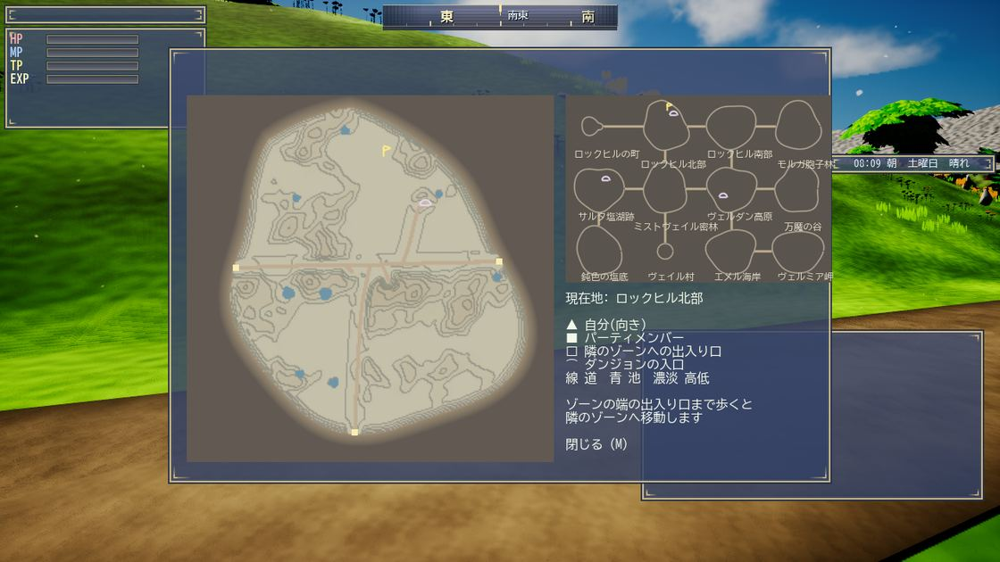
上の並びは世界の地図と同じ。町の東が北部、北部の東が南部、北部の南が密林……とつながっています。
町の東門を出てすぐ。最初の狩り場。ゴブリンやチキンから始めて、ゴブリンガード・カクタスまで。大坑道の入口もこの近く。
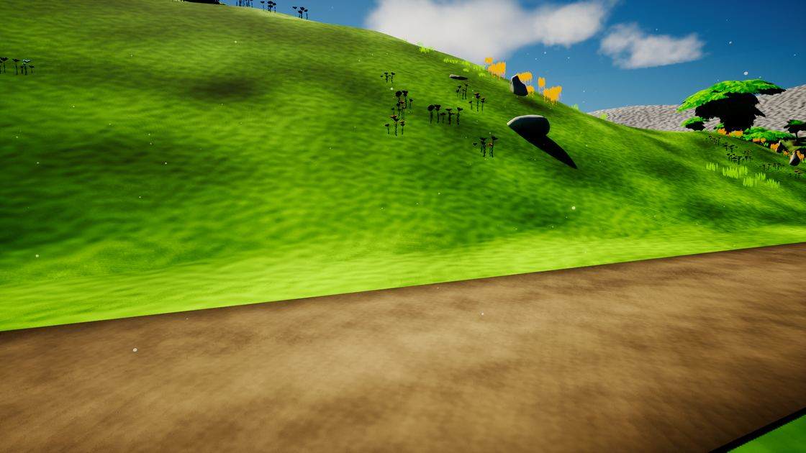
| 魔物 | レベル | 性質 |
|---|---|---|
| ゴブリン | Lv1 | 見つかると襲う |
| チキン | Lv1 | こちらから殴らなければ襲わない |
| コウモリ | Lv2 | 足音に反応 |
| スライム | Lv3 | こちらから殴らなければ襲わない |
| サソリ | Lv4 | 足音に反応 |
| カエル | Lv4 | こちらから殴らなければ襲わない |
| マッシュ | Lv5 | こちらから殴らなければ襲わない |
| ゴブリンガード | Lv6 | 見つかると襲う |
| カクタス | Lv7 | 見つかると襲う |
北部の東。オークやワーグが街道に出る。南の端にぬし「ガラ・ヘイ」。サポートジョブの「炎の証」はここ。
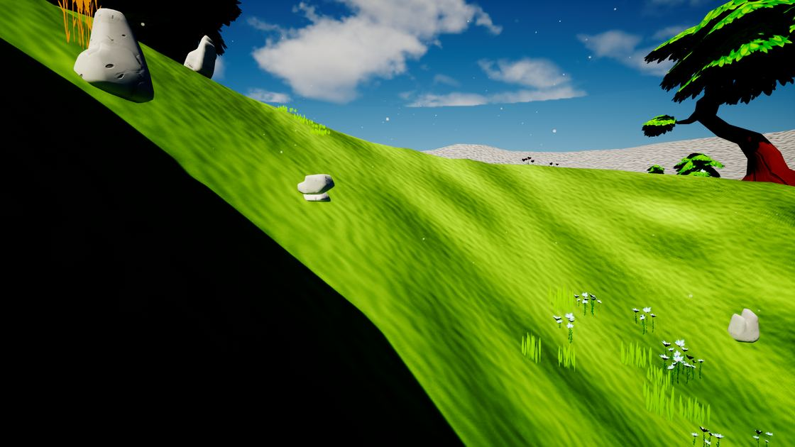
| 魔物 | レベル | 性質 |
|---|---|---|
| スライム | Lv6 | こちらから殴らなければ襲わない |
| バーブ | Lv7 | 見つかると襲う |
| トゲスライム | Lv8 | 見つかると襲う |
| アルマビー | Lv9 | 足音に反応 |
| ゴブリンディガー | Lv9 | 見つかると襲う |
| フィッシュ | Lv9 | こちらから殴らなければ襲わない |
| オーク | Lv11 | 見つかると襲う |
| ワーグ | Lv12 | 見つかると襲う・足音に反応 |
| ゴブリンメイジ | Lv13 | 見つかると襲う・詠唱に反応・魔法を使う |
| アルパキング | Lv16 | こちらから殴らなければ襲わない |
| ★ ガラ・ヘイ | Lv17 | 見つかると襲う |
北部の南。密林で視界が悪い。サーベルキャットやナーガの司祭は魔法に反応する。奥にぬし「ソルジャークロウラー」「蛇司祭シェザル」。南にヴェイル村。
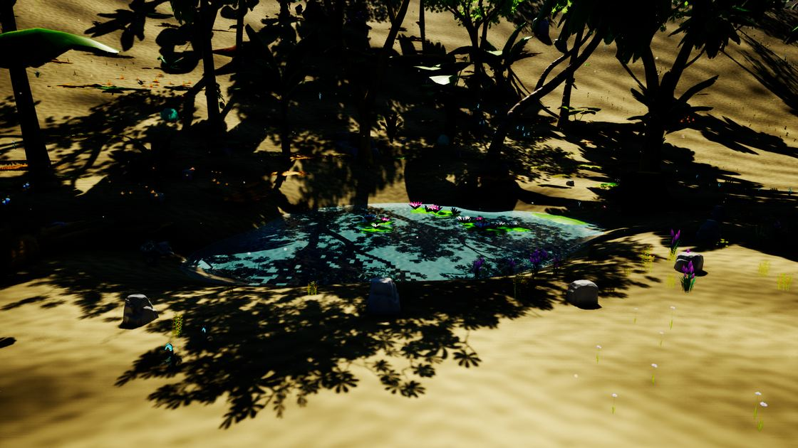
| 魔物 | レベル | 性質 |
|---|---|---|
| カクタス | Lv8 | 見つかると襲う |
| ピンクゼリー | Lv10 | こちらから殴らなければ襲わない |
| サーベルキャット | Lv12 | 見つかると襲う・詠唱に反応・魔法を使う |
| モンクルース | Lv13 | 見つかると襲う |
| グラブ | Lv14 | 足音に反応 |
| コルヴ | Lv15 | 見つかると襲う・詠唱に反応・魔法を使う |
| ディノ | Lv18 | 見つかると襲う |
| ★ ソルジャークロウラー | Lv18 | 見つかると襲う・足音に反応 |
| ナーガの司祭 | Lv18 | 見つかると襲う・魔法を使う |
| ★ 蛇司祭シェザル | Lv20 | 見つかると襲う・詠唱に反応・魔法を使う |
南部の南。ラビットから始まり、奥はイエティやドラゴン。地下霊廟の入口があり、ぬし「プリンセストード」「奈落王グァルドス」が出る。
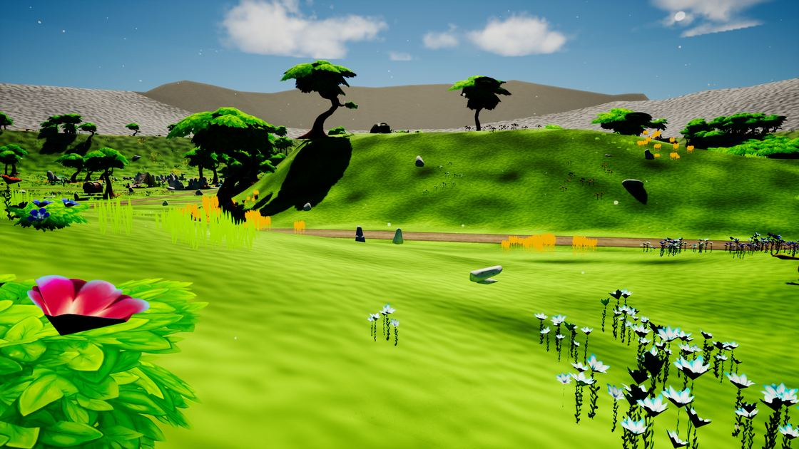
| 魔物 | レベル | 性質 |
|---|---|---|
| ラビット | Lv14 | こちらから殴らなければ襲わない |
| スクイドル | Lv16 | 足音に反応 |
| ハイワール | Lv17 | 足音に反応 |
| サーベルキャット | Lv18 | 見つかると襲う・詠唱に反応・魔法を使う |
| ゴースト | Lv19 | 見つかると襲う・足音に反応・詠唱に反応・魔法を使う |
| ディノ | Lv20 | 見つかると襲う |
| ★ プリンセストード | Lv20 | 足音に反応 |
| オークスカル | Lv22 | 見つかると襲う |
| コーカス | Lv22 | 見つかると襲う・詠唱に反応・魔法を使う |
| イエティ | Lv25 | 見つかると襲う |
| ★ ドラゴン | Lv28 | 見つかると襲う・足音に反応・詠唱に反応・魔法を使う |
| ★ 奈落王グァルドス | Lv30 | 見つかると襲う・足音に反応 |
高原の東。デーモン・ブルーデーモン・竜の谷。最奥に「ドラゴンロード」「悪夢竜ヴァルガナ」など竜のぬしが並ぶ。
| 魔物 | レベル | 性質 |
|---|---|---|
| ディノ | Lv20 | 見つかると襲う |
| ゴーレリング | Lv21 | 見つかると襲う |
| コルヴ | Lv24 | 見つかると襲う・詠唱に反応・魔法を使う |
| オークスカル | Lv26 | 見つかると襲う |
| イエティ | Lv28 | 見つかると襲う |
| エイリアン | Lv30 | 見つかると襲う |
| スカルゴースト | Lv30 | 見つかると襲う・足音に反応・詠唱に反応・魔法を使う |
| デーモン | Lv32 | 見つかると襲う・詠唱に反応・魔法を使う |
| ★ キノコ王 | Lv33 | 見つかると襲う |
| ブルーデーモン | Lv35 | 見つかると襲う・詠唱に反応・魔法を使う |
| ★ ドラゴン | Lv38 | 見つかると襲う・足音に反応・詠唱に反応・魔法を使う |
| ★ 悪夢竜ヴァルガナ | Lv40 | 見つかると襲う・足音に反応 |
| 戦慄竜 | Lv44 | 見つかると襲う・足音に反応 |
| ★ ドラゴンロード | Lv45 | 見つかると襲う・足音に反応・詠唱に反応・魔法を使う |
| 魂喰竜 | Lv46 | 見つかると襲う・足音に反応 |
南部の東。胞子の魔物は音に反応するものが多い。ぬし「胞子母王モルガ」は勇者の資格の1つ目。
| 魔物 | レベル | 性質 |
|---|---|---|
| 胞子歩き | Lv24〜31 | 足音に反応 |
| 森ミミズ | Lv26〜31 | 足音に反応 |
| 胞子眼 | Lv27〜32 | 見つかると襲う・詠唱に反応・魔法を使う |
| 菌蜜蜂 | Lv28 | 見つかると襲う |
| 胞子霊 | Lv30〜33 | 詠唱に反応・魔法を使う |
| ★ 胞子母王モルガ | Lv35 | 見つかると襲う・足音に反応・詠唱に反応 |
密林の西。塩の魔物。地底塩窟の入口があり、ぬし「塩冠王サルタ」は勇者の資格の2つ目。
| 魔物 | レベル | 性質 |
|---|---|---|
| 塩殻ガニ | Lv32〜39 | 見つかると襲う |
| 干潟エイ | Lv34〜40 | 足音に反応 |
| 塩晶ゴーレム | Lv37〜41 | 見つかると襲う・詠唱に反応 |
| 塩湖サラマンダー | Lv37 | 見つかると襲う・足音に反応 |
| 白骨番兵 | Lv38〜42 | 見つかると襲う |
| ★ 塩冠王サルタ | Lv44 | 見つかると襲う・足音に反応・詠唱に反応 |
高原の南の浜。Lv40代の狩り場。ぬし「海嘯王ガルマーレ」は勇者の資格の3つ目。東にヴェルミア岬。
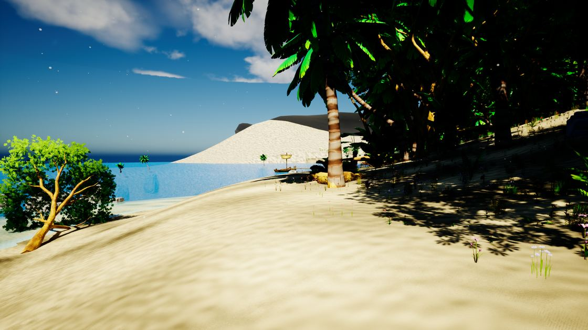
| 魔物 | レベル | 性質 |
|---|---|---|
| 潮騒の大蟹 | Lv40 | 見つかると襲う |
| 砂浜の徘徊蜥蜴 | Lv41 | 見つかると襲う |
| 碧羽の浜鳥 | Lv42 | 見つかると襲う・足音に反応 |
| 漂着樽の粘体 | Lv43 | 見つかると襲う |
| 難破船の亡霊 | Lv44 | 見つかると襲う・足音に反応・詠唱に反応 |
| 珊瑚角の獣 | Lv46 | 見つかると襲う・足音に反応 |
| 浜風の砂喰い | Lv47 | 見つかると襲う |
| 潮煙の骸兵 | Lv48 | 見つかると襲う・足音に反応 |
| 波磨きの岩鬼 | Lv50 | 見つかると襲う |
| ★ 海嘯王ガルマーレ | Lv52 | 見つかると襲う・足音に反応・詠唱に反応 |
塩湖跡の南。Lv50を過ぎてからの狩り場。ギルドの湖の依頼、絆ルカ・ヴァルの証、最奥にぬし「湖底王ネルガル」。
| 魔物 | レベル | 性質 |
|---|---|---|
| 枯塩の徘徊者 | Lv48 | 見つかると襲う |
| 塩喰らいの蜥蜴 | Lv51 | 見つかると襲う |
| 湖底の影 | Lv54 | 見つかると襲う |
| 鹹湖の黒騎士 | Lv57 | 見つかると襲う |
| 白晶の巨躯 | Lv60 | 見つかると襲う |
| ★ 湖底王ネルガル | Lv62 | 見つかると襲う |
最果ての岬。港から北東の廃城、西の古森。剣聖シグルドが港に立つ。ぬし「古森の主エルダリス」「廃城の主ガルデリク」。
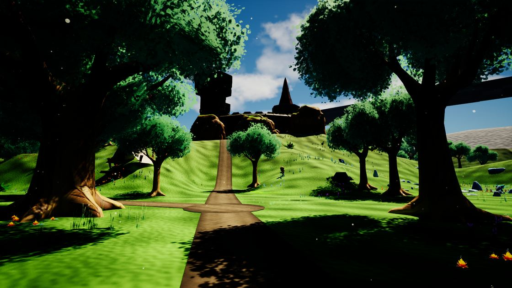
| 魔物 | レベル | 性質 |
|---|---|---|
| 岬の大蟹 | Lv58 | 見つかると襲う |
| 潮溜まりの大蟹 | Lv59 | 見つかると襲う |
| 潮風のハイワール | Lv60 | 見つかると襲う・足音に反応 |
| 古森の狼人 | Lv63 | 見つかると襲う・足音に反応 |
| 古森の妖樹 | Lv64 | 見つかると襲う |
| 古森の守り手 | Lv65 | 見つかると襲う |
| 廃城の骸騎士 | Lv66 | 見つかると襲う |
| 廃城の亡霊 | Lv68 | 見つかると襲う・詠唱に反応 |
| ★ 古森の主エルダリス | Lv68 | 見つかると襲う・足音に反応・詠唱に反応 |
| 城壁の魔道士 | Lv69 | 見つかると襲う・詠唱に反応・魔法を使う |
| 廃城の黒騎士 | Lv70 | 見つかると襲う・足音に反応 |
| ★ 廃城の主ガルデリク | Lv72 | 見つかると襲う・足音に反応・詠唱に反応 |
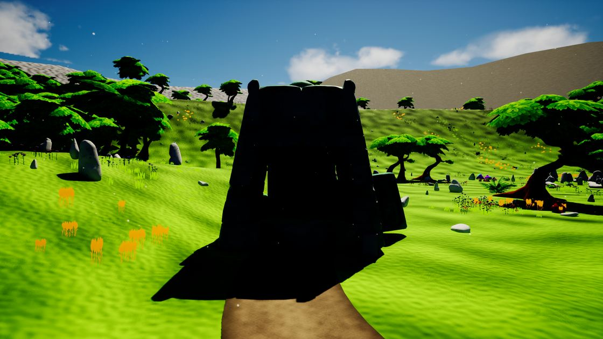
| 場所 | 入口 | レベル | 中身 |
|---|---|---|---|
| ロックヒル大坑道 | ロックヒル北部 | Lv5〜9 | コウモリ・スカルゴースト・ゴブリンディガー・アルマビー。奥に主「ドルガン」(Lv9)。鉱夫の依頼「坑道の主を鎮めよ」 |
| 地下霊廟 | ヴェルダン高原 | Lv24〜36 | 墓所の骸兵・さまよう霊・黒鉄の墓守。番人「環守ヴォルク」(Lv34)と主「地下霊廟の主ヴェルガ」(Lv36) |
| 地底塩窟 | サルタ塩湖跡 | Lv40〜52 | 塩殻ガニ・塩湖サラマンダー・塩晶ゴーレム。主「地底塩窟の主サルディス」(Lv52) |
| 影ロックヒル | 町の西・城の北の鏡の祠 | Lv50〜 | 人間の影の一行と戦う11階の試練。高レベルの遊びを参照 |
| 円月闘技場 | 町の西側の入口 | 誰でも | プレイヤー同士で戦う場所。パーティ以外は敵同士。倒れても経験値は減らない。絆は連れて入れない |
| 天空回廊 | 町の「回廊の案内人」に話す | 誰でも | 戦わず跳んで登る塔。落ちても死なない。タイムアタックでグリム |
| ヴェイル村 | ミストヴェイル密林の南 | － | 調理・錬金・鍛冶の合成ができる村。素材屋・料理人・倉庫番が依頼を出す。宿と帰還の印あり |
| ヴェルミアの港 | ヴェルミア岬の入口 | － | 岬の拠点。道具屋・宿・帰還の印・郵便ポスト。剣聖シグルドが立つ |
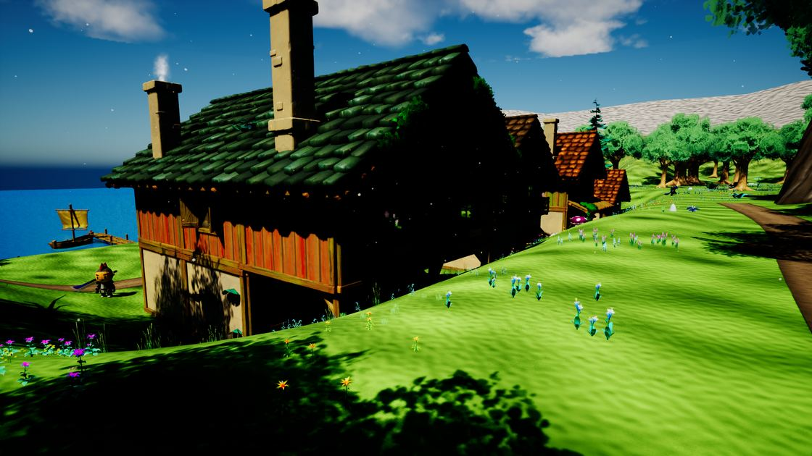
最初に選べるのは基本の6つ（戦士・モンク・白導士・黒導士・紅導士・シーフ）。上級ジョブ5つはLv30前後の依頼で解放されます。ジョブは町の「ジョブ指南役」でいつでも変えられ、ジョブごとに別のレベルで育ちます。迷ったら「戦士」か「白導士」。戦士はHPが高く一人でも狩りやすく、白導士は絆を呼べば安定します。
あらゆる武器を操る戦闘のプロ。高いHPとSTRで前衛として活躍する。
己の肉体を武器とする格闘家。全ジョブ中で最も高いHPを誇る。
回復・支援魔法のスペシャリスト。パーティに不可欠な存在。
攻撃魔法のスペシャリスト。最高のINTとMPで強力な魔法を放つ。
何でもこなす万能職。黒・白の両魔法を扱い、前衛戦闘もこなす。
俊敏な戦士。盗む・敵対心の操作・不意打ちの一撃を得意とする。
盾と片手剣で前線を守る重装の騎士。白魔法も少し扱える。
両手武器で大ダメージを狙う攻撃特化の騎士。黒魔法も少し扱える。
獣を心で従える野の狩人。斧を振るい、獣を眠らせて戦況を操る。
影を纏う暗殺者。短剣と体術で敵を翻弄し、分身で刃をかわす。
楽器を携え、歌でパーティを動かす後衛。奏でている間だけ攻撃力・回避・HPとMPの回復が味方に効き続ける。殴れない。
大剣ひとつで道を切り開く剣の達人。魔法は使わず、強烈な剣技で敵をなぎ払う。絆の者だけのジョブ。
町の「ポムリー」の依頼「炎の証」（ガラ・ヘイ）「土の証」（ソルジャークロウラー）「水の証」（プリンセストード）→「ポムリーの試練」（蛇司祭シェザル）を終えると、メインとは別にサポートジョブを付けられます。サポートのレベルはメインの半分まで効き、その範囲の魔法・アビリティが使えます。
攻撃していると溜まるTPが100%以上で、コマンド窓の「武技」から撃てます。武器の種類とレベルで覚える技が変わります。仲間と続けて撃つと「連携」になり、追加のダメージが出ます（連携にさらに魔法を合わせるとマジックバースト）。
| 武器 | 武技(覚えるレベル) |
|---|---|
| 片手剣 | ソニックスラッシュ(Lv1)、フレイムスラッシュ(Lv9)、焔返し(Lv15)、閃光刃(Lv30)、蒼天斬(Lv40)、煌刃(Lv50)、天劫剣(Lv60) |
| 格闘 | ラッシュ(Lv1)、ボディチャージ(Lv5)、羅刹掌(Lv15)、炎舞脚(Lv30)、崩拳(Lv40)、天衝脚(Lv50)、百花繚乱(Lv60) |
| 斧 | クラッシュアクス(Lv7)、スマッシュアクス(Lv18)、断岩斧(Lv30)、旋風斧(Lv40)、大地割り(Lv50)、覇王斧(Lv60) |
| 短剣 | 蛇牙突き(Lv8)、刃風(Lv24)、燕返し(Lv32)、影刺し(Lv40)、紅蜂(Lv50)、幻月(Lv60) |
| 両手剣 | 大断ち(Lv10)、月輪斬(Lv20)、剛断(Lv30)、烈火斬(Lv40)、山崩し(Lv50)、覇斬(Lv60) |
| 杖 | 星砕き(Lv1)、地脈撃(Lv20)、流水(Lv30)、天杖(Lv40)、星辰撃(Lv50)、神威(Lv60) |
| 両手鎌 | 刈り風(Lv10)、冥月(Lv20)、影刈り(Lv30)、死神の鎌(Lv40)、魂狩り(Lv50)、冥府送り(Lv60) |
| 棍 | 岩割り(Lv1)、鐘打ち(Lv20)、雷槌(Lv30)、聖打(Lv40)、砕星(Lv50)、天鳴撃(Lv60) |
| 楽器 | フィナーレ(Lv20)、レクイエム(Lv40)、夜想の調べ(Lv50)、終焉の和音(Lv60) |
「絆の者」は、呼ぶといつでも一緒に戦ってくれる仲間です。5人まで呼べて、自分のレベルに合わせて強さが揃います。回復役・盾役・攻撃役をそろえると、格上の魔物やぬしにも挑めます。呼ぶ相手を解放するには、町の「訓練官ドルグ」（前衛の絆）と「導師エルナ」（魔法職の絆）の依頼「絆の証」を終えます。
| Lv | 絆 | 依頼(受ける相手) | やること | 戦い方 |
|---|---|---|---|---|
| Lv10 | 白導士セラ 白導士 | 絆の証・癒 導師エルナ | アルマビー ×8 | 傷ついた仲間を見極め、必要な強さの回復を使う白導士。 |
| Lv15 | 戦士リオ 戦士 | 絆の証・剣 訓練官ドルグ | スクイドル ×8 | 敵の注意を引き受け、主人と回復役を守る戦士。 |
| Lv20 | 黒導士ノア 黒導士 | 絆の証・炎 導師エルナ | ディノ ×8 | 距離を保ち、状況に応じて強力な属性魔法と睡眠を使い分ける黒導士。 |
| Lv25 | モンクガイ モンク | 絆の証・拳 訓練官ドルグ | イエティ ×8 | 敵の背後から拳を重ね、傷つけば自ら立て直すモンク。 |
| Lv32 | シーフミナ シーフ | 絆の証・影 訓練官ドルグ | 胞子眼 ×8 | 敵の背後を取り、一度だけ盗みを試みて隙を突くシーフ。 |
| Lv35 | 紅導士リラ 紅導士 | 絆の証・理 導師エルナ | ブルーデーモン ×8 | 回復役の有無を見て、回復・弱体・攻撃を切り替える紅導士。 |
| Lv36 | 吟遊詩人リュカ 吟遊詩人 | 絆の証・音 導師エルナ | スカルゴースト ×14 | 竪琴を抱えて歌う旅の楽師。殴らず、戦の歌と癒しの歌で仲間を支える。 |
| Lv41 | ナイトアルド ナイト | 絆の証・盾 訓練官ドルグ | 塩晶ゴーレム ×8 | 敵の正面に立ち、盾技と守りの構えで仲間を守るナイト。 |
| Lv51 | 忍者カゲロウ 忍者 | 絆の証・霞 訓練官ドルグ | ゴーレリング ×8 | 敵の正面を影で受け、忍術で攻防を組み立てる忍者。 |
| Lv52 | 獣使いルカ 獣使い | 絆の証・牙 訓練官ドルグ | 塩喰らいの蜥蜴 ×8 | 格上の獣を弱らせ、勢いと息吹で長く戦う獣使い。 |
| Lv57 | 暗黒騎士ヴァル 暗黒騎士 | 絆の証・闇 訓練官ドルグ | 鹹湖の黒騎士 ×8 | 敵の背後から命を削って攻め、吸収魔法で踏みとどまる暗黒騎士。 |
| Lv60 | 剣聖シグルド 剣聖 | 剣聖の道・試し 剣聖シグルド(ヴェルミアの港) | 廃城の黒騎士 ×10 | 白と黒の鎧に大剣を背負う剣聖。魔法は使わず、一閃と大旋風で敵をなぎ払う。 |
他の人が戦っている魔物は名前が灰色になり、横取りできません（「他の冒険者が戦っている」）。ぬしは金橙の名前と★で目立ちます。
人と組むと最大6人。TABで人を選びENTER→「パーティに誘う」。経験値はパーティで一番レベルの高い人を基準に配られるので、レベル差が大きいとほとんど入りません。そのときはリーダーがレベルシンク（誰か1人のレベルに全員を合わせる。Lv10以上）を張ります。F1〜F6で仲間を選んで回復や強化ができ、Eのアシストで同じ相手を狙えます。
/item 品名。どれかのジョブがLv30になると、Ctrl+Shift+Q（または/ai）で自動狩りが使えます。自分のレベルに合う狩り場へ歩き、絆を呼び、魔物を狩り、危なくなれば逃げます。メインメニューの「AIの薬」で薬を使うかも決められます。試練（影ロックヒル）や天空回廊では使えません。
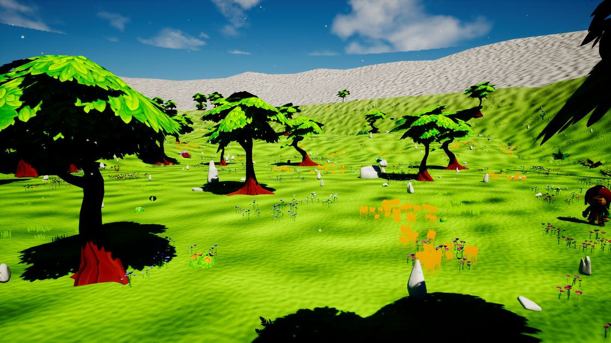
「クルル」は乗り物の鳥。ゲームの中では定期的に競クルル（クルルのレース）が開かれ、券を買って当てるとグリムが増えます。当てた人で山分けするパリミュチュエル方式（控除20%）です。
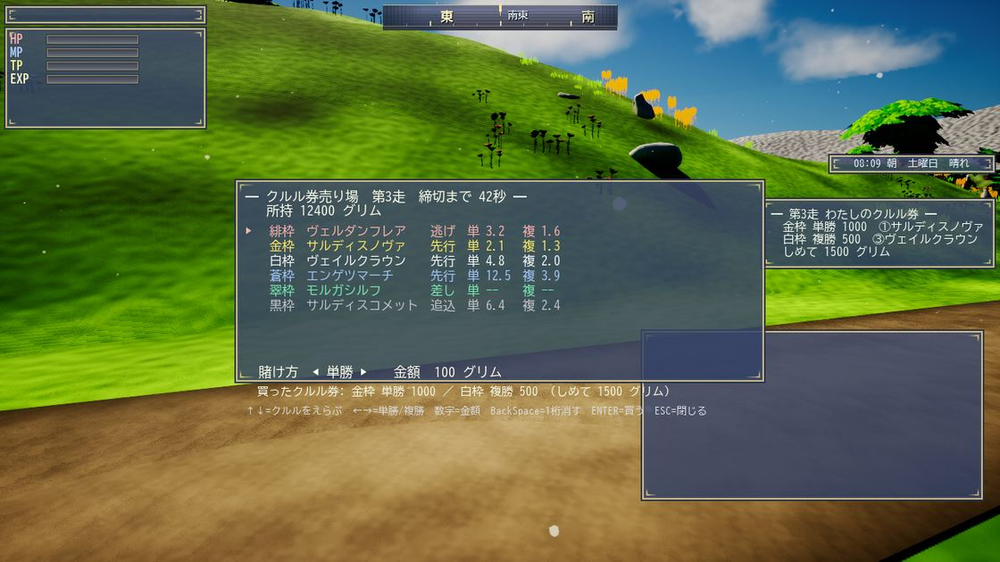
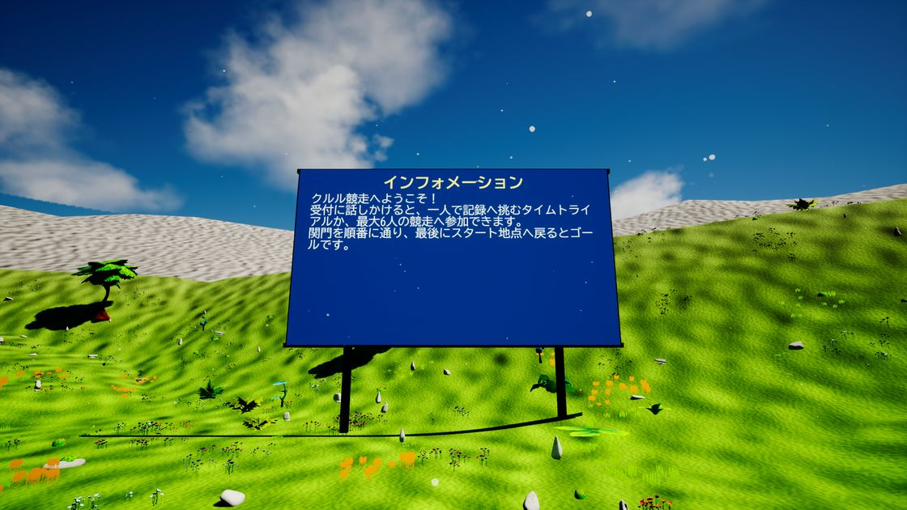
クルル舎の親方の依頼（Lv12〜16）で「クルルの笛」を手に入れると、Vでクルルに乗れます。乗ったまま町のクルル競走受付に話すと、ロックヒル北部を一周するタイムアタックに挑めます（賞品はなし、記録だけ）。
https://grimoire-online.org をブラウザで開くと、ゲームを起動しなくても遊べる4つの遊びがあります。ゲームと同じログイン名・パスワードで入り、遊ぶキャラクターを選びます（持ち物とグリムはゲームと共通）。ポータルだけで新しいアカウントとキャラを作ることもできます。初めて開くときはメールに届く番号で本人確認をします。
| 遊び | 何ができる | 値段 |
|---|---|---|
| 競クルル | 出走表とオッズを見て券を買い、レースをライブで観戦。過去の開催・的中者発表も見られる | 券は100グリムから |
| クレーンゲーム | アームでカプセルや立体グリカをつかむ。景品はグリモカード | 1回50グリム |
| グリカ大戦 | 集めたグリモカードから5枚のデッキを組み、人と対戦。「対戦相手を待つ」で募集 | 無料 |
| 魔導採取帖（裏口） | 伐採・採掘・採草・釣りの手作業ミニゲーム。採れた素材はゲームの持ち物へ入る。曜日の属性が合う系統はよく採れ、月光草は夜だけ | 採取券が1日12枚無料、追加は1枚50グリム |
道具屋で木の釣り竿（メインに装備）と餌（ミミズなど。サブに装備）を買い、水辺でN（または/fish）。魚が掛かったらバーが合う瞬間にENTER。餌によって釣れる魚が変わり（ミミズ=小魚、川エビ=中型、光る羽虫=大物・珍魚、幻のすり身=伝説の魚）、竿は木→匠→伝説の「竜鬚」と強くなります。町の「釣り師ヴェッド」の依頼（Lv10、魚20匹）で匠の竿がもらえます。釣った魚は「魚問屋の主人」が山（10匹）単位で買い取り、今日の目玉は日替わりで高値。買取の上限は約1週間で戻ります。
野に立つ木・岩・草の採取地にENTERで作業が始まり、バーが満ちると素材（丸太・銅の原石・薬草など）が手に入ります。等級が上がるほど太い木や珍しい鉱石が採れます。Webポータルの「魔導採取帖」でも同じ素材が採れます。
ミストヴェイル密林の南のヴェイル村で、素材とクリスタル（火・氷・風・土・雷・水）を組み合わせて/craft。調理（料理人）・錬金（素材屋。ポーション類）・鍛冶（倉庫番。武器・防具）の3系統で、村の依頼を順に終えると腕（スキル）の目標が分かります。スキルはUで確認。
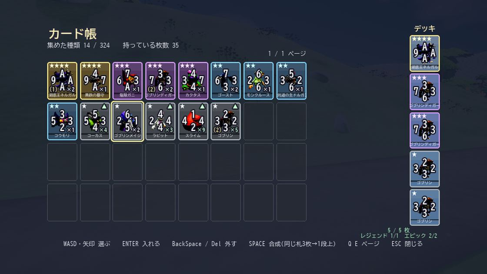
魔物の絵札を集めて5枚のデッキを組み、人やNPCと対戦するカード遊びです。カードは魔物の落とし物やクレーンゲームで手に入ります。NPCとは、町のNPCをTABで選んでXで勝負を挑みます。他のプレイヤーとは、町の「グリカの卓」の向かい合った席に二人で座ると対局の申し込みが届きます（席はENTERで座る・もう一度で立つ。Bでカード帳）。Webの「グリカ大戦」でも同じデッキで戦えます。10人に勝つと称号「絵札の覇者」。
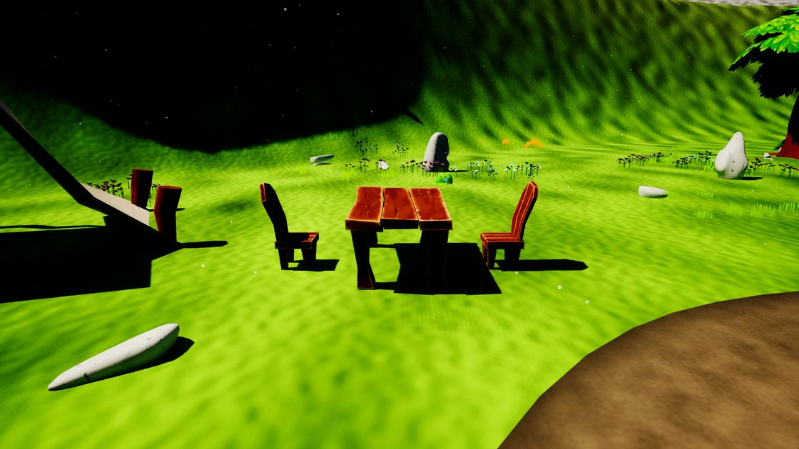
町の「回廊の案内人」に話すと、戦わずに跳んで登る塔へ送られます。落ちても死なず、通り過ぎた一番上の「かがり火」へ戻されるだけ。入ると10分のタイムアタックが始まり、途中のかがり火4か所で各80グリム、頂上で200グリム、速く登るほどボーナス（3分未満+600、5分未満+700、8分未満+350、10分未満+100）。報酬は1日3回まで、1日の合計は1500グリムまで（それを超えても登ることはできます）。踏破で称号「空駆ける者」、3分未満で「天翔ける者」。回廊の中だけジャンプが高くなります。絆とクルルは連れて入れません。
町の西、城の北にある鏡の祠の番人「影守りのセイラ」が「勇者の資格」の依頼を出します（どれかのジョブがLv50から）。3つの王のぬし──胞子母王モルガ（モルガ胞子林・Lv35）・塩冠王サルタ（サルタ塩湖跡・Lv44）・海嘯王ガルマーレ（エメル海岸・Lv52）──を倒して紋章を集めると、祠が開きます。
| 階 | 場所 | この階のヒント | 影の一行 |
|---|---|---|---|
| 1F | 石牢 | 癒し手を先に倒せ 傷を癒す者がいる限り、剣は折れない | 剣闘士ガロ(戦)・白の祈り手ミラ(白) |
| B1 | 地下水路 | 盾に惑わされるな 挑発に乗らず、後ろの魔導士を狙え | 盾士ロウ(ナ)・黒の術士ネネ(黒)・白の癒し手ユラ(白) |
| B2 | 書庫 | 影を捉える目を持て 空蝉と回避を破るには、命中が要る | 盗賊カイ(シ)・忍びシノ(忍)・紅の剣士リゼ(紅) |
| B3 | 聖堂 | 歌を止めよ 詩人の歌が、前衛を鬼に変える | 暗刃グレン(暗)・拳士バン(モ)・吟遊詩人フィオ(吟)・白の司祭ソラ(白) |
| B4 | 獣舎 | 数を見誤るな 獣使いの傍らには、もう一体いる | 獣使いラナ(獣)・戦士ゴウ(戦)・黒の賢者クロ(黒)・紅の守り手エマ(紅) |
| B5 | 鏡の間 | 己を知れ 鏡に映るのは、お前たち自身だ | 写し身(こちらの編成と同じジョブ) |
| B6 | 魔導炉 | 魔法を封じよ 沈黙を。魔法への守りを | 双星の黒×2・紅の導師・白の導師・詩人… |
| B7 | 闘技の坑 | 一撃に耐えよ 盾が倒れれば、すべてが崩れる | 戦士ザン・暗黒騎士ヴァル・拳聖メイ・忍頭レン・詩人… |
| B8 | 氷の回廊 | 連携を断て 重なる技こそ、最も恐ろしい | 聖騎士アル・白賢者ティア・黒賢者ベル・紅賢者ミナ・詩人… |
| B9 | 溶岩の祭壇 | 切り札を読め 彼らは最後の力を順に解き放つ | 精鋭の盾・刃・拳・忍・紅… |
| B10 | 王の間 | 勇者の座を継げ 先代勇者一行、最後の試練 | 先代勇者レオン・先代の戦士ディン・先代の拳士マオ… |
手に入れた称号はCのステータスの窓で付け替えられ、名前の前に【称号】と出ます。付けている称号の分だけ能力が上がります。
| 称号 | 条件 | 効き目 |
|---|---|---|
| 【勝負師】 | 競クルルで3連勝 | 命中+5 |
| 【クルルの申し子】 | 競クルルで5連勝 | 命中+8 回避+5 |
| 【伝説の目利き】 | 競クルルで10連勝 | 命中+12 回避+8 |
| 【空駆ける者】 | 天空回廊を踏破する | 回避+8 |
| 【天翔ける者】 | 天空回廊を3分未満で踏破する | 命中+5 回避+12 |
| 【絵札の覇者】 | グリカで10人に勝つ | MP+30 防御+5 |
| 【熟練の冒険者】 | どれかのジョブをLv60にする | HP+60 MP+20 |
| 【挑戦者】 | 影ロックヒルのB3を突破する | 攻撃+6 防御+6 |
| 【英傑】 | 影ロックヒルのB5を突破する | 攻撃+10 防御+10 |
| 【勇者候補】 | 影ロックヒルのB8を突破する | HP+50 攻撃+12 防御+12 |
| 【勇者】 | 影ロックヒルのB10を突破する | HP+100 MP+50 攻撃+15 防御+15 命中+10 |
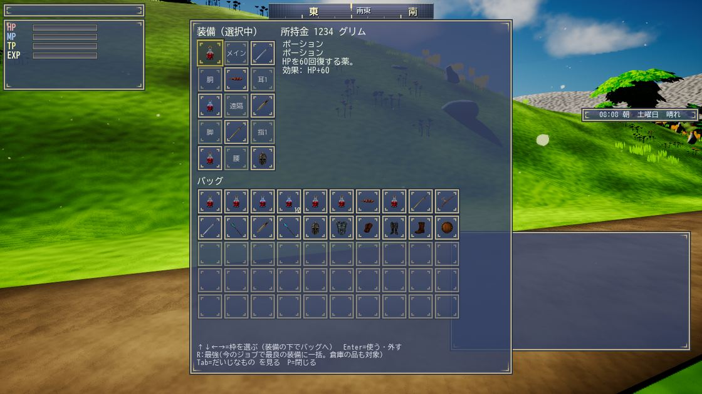
装備には必要レベルと、着けられるジョブがあります。新しい町や村に着いたら店をのぞき、依頼の褒美とぬしの落とし物で埋めていくのが基本です。
| Lv | 防具 | 武器 | 手に入れ方 |
|---|---|---|---|
| Lv1 | レザーバンダナ・布の胴着・レザーグローブ・レザートラウザ・レザーハイブーツ | ブロンズ系(剣・短剣・斧・棍・ナックル)・見習いの杖 | 町の防具屋・武器屋 |
| Lv10 | ブラスキャップ・チェーンメイル・ブラスフィンガー・チェーンホーズ・グリーブ | アイアン系・オークスタッフ・グレートソード・ウォーサイズ | 町の店。指輪・ピアスもLv10から |
| Lv20 | ミスリルメイル(前衛)／疾風の胴着(軽装)／呪紋のコイフ(魔法職) | ミスリルソード・ミスリルアクス | 町の店と依頼の報酬 |
| Lv30 | ミスリルヘルム・隠形の頭巾・星詠みの法衣・香草の外套 | ダマスカスソード・ダマスカスクロー | 村の合成・魔物の落とし物・競売 |
| Lv40 | アダマンガントレ・韋駄天の籠手・清唱の靴・月光の脚甲 | アダマンソード・アダマンクロー・闇祓いの大剣 | ギルドのアダマン依頼・店(Lv40〜) |
| Lv50 | 影銅→影銀→影金→勇者の装備(頭・胴・手・脚・足) | 影銅〜勇者の各武器 | 影ロックヒルの証と交換(鏡の祠) |
| Lv60 | 大賢者のローブ・天羽の道着・竜鱗の大鎧・星屑の法衣 | 勇者の聖剣・覇王の拳・賢者の杖・星鉄の槌 | 町の店(Lv60)・ヴェルミア岬の落とし物・合成 |
| 品 | 効き目 |
|---|---|
| ポーション | HPを60回復する薬。 |
| ハイポーション | HPを150回復する高品質な薬。 |
| マナポーション | MPを30回復する薬。 |
| ハイマナポーション | MPを150回復する高品質な薬。 |
| 毒消し | 毒の状態異常を治す薬。 |
| 声戻しの薬 | 静寂の状態異常を治す薬。 |
| グリルマトン | 羊肉の串焼き。一定時間、攻撃力と防御力が上がる。 |
| 魚 | 釣りで獲れた魚。食べるとHPが少し回復する。合成素材にも。 |
| 塩焼きの魚 | 川魚を塩で焼いた素朴な一皿。しばらく体力の減りが和らぐ。 |
| 月光魚の香草焼き | 香草を敷いて焼いた月光魚。じんわりと力が湧く。 |
| 星屑のスープ | 星屑草を煮出した淡く光るスープ。深い休息をもたらす。 |
| ニジマスの香草蒸し | 香草で蒸したニジマス。穏やかに力が続く。 |
| 木の実のパン | 若木の枝で焼いた素朴なパン。腹持ちがよい。 |
| なまず鍋 | オオナマズを丸ごと煮た力自慢の鍋。体が芯から温まる。 |
| 霜降り燻製 | 霜降り材で燻した魚。日持ちがして味が濃い。 |
| 淵の王の姿煮 | ヌシを丸ごと煮付けた村一番のごちそう。 |
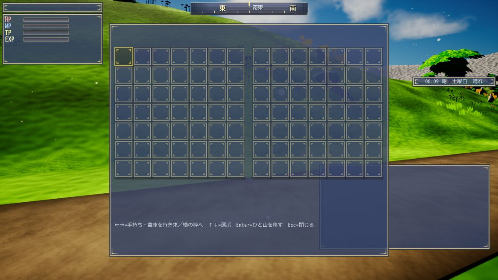
/help | コマンドの一覧を出す |
|---|---|
/invite 名前 | パーティに誘う(コマンド窓の「パーティに誘う」でも) |
/join | 誘いを受ける |
/decline | 誘いを断る |
/leave | パーティを抜ける |
/p 文 | パーティに話す |
/friend 名前 | フレンドを申し込む |
/attack | 選んだ相手を攻撃 |
/assist | アシスト |
/ws 技名 | 武技 |
/ma 魔法名 | 魔法 |
/ja 技名 | アビリティ |
/item 品名 | 品を使う |
/fish | 釣り |
/craft・/synth | 合成(ヴェイル村) |
/kururu | クルルに乗る・降りる |
/ah | 競売の窓を開く(係員の近くで) |
/job | ジョブを見る |
/subjob | サポートジョブ |
/quest | クエストの窓 |
/loc | 今いる場所の座標 |
/ai | 自動狩り(AI)の入切(Lv30〜) |